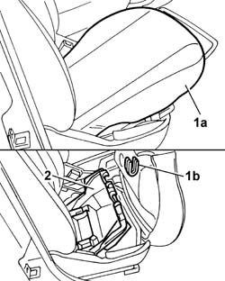

7045A92 Front seat COVER, left or right - R.R. with seat removed
- Path
- Procedures > 70 FITTINGS > 7045 FRONT SEATS > 7045A front seat assembly > 7045A92 Front seat COVER, left or right - R.R. with seat removed
- Kind
- repair procedure (removal / refitting; the operation number is the code)
- Applies to
- all engines; all production periods
- Interactive page
- https://sloeber94.github.io/elrnDB-fPnd/en/#/2753249
Applies to: all engines; all production periods
 Removing
Removing
 Refitting
Refitting1. Move the front seat cushion (1a) completely forwards until it is released from the rear fasteners (1b).
2. Fold the cushion over, then lift up the oddments compartment which is a press fit on the front seat frame and remove it.

Applies to: all engines; all production periods
Refitting
RemovingCheck the condition of the oddments compartment.
Fit the oddments compartment, which is a press fit, in the housing in the front seat frame.
Fold the cushion back and move it backwards until the fasteners can be secured to the front seat frame.